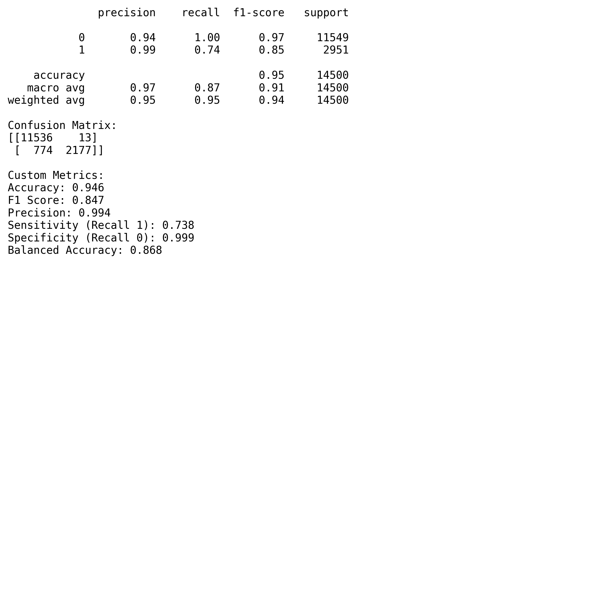
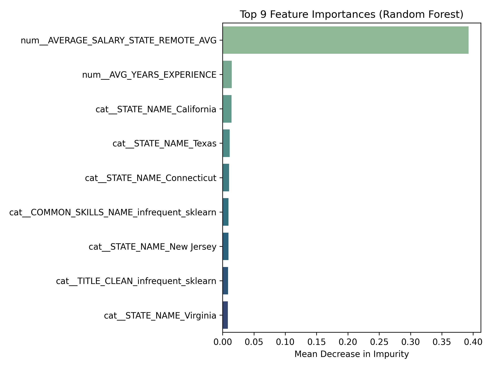

Code
import pandas as pd
df = pd.read_csv("./data/lightcast_job_postings.csv")import findspark
findspark.init()
from pyspark.sql import SparkSession
import pandas as pd
import plotly.express as px
import plotly.io as pio
import numpy as np
np.random.seed(42)
pio.renderers.default = "notebook"
# Initialize Spark Session
spark = SparkSession.builder.appName("LightcastData").getOrCreate()
# Load Data
df = spark.read.option("header", "true").option("inferSchema", "true").option("multiLine","true").option("escape", "\"").csv("./data/lightcast_job_postings.csv")
# Show Schema and Sample Data
print("---This is Diagnostic check, No need to print it in the final doc---")
df.printSchema() # comment this line when rendering the submission
df.show(5)import pandas as pd
df = pd.read_csv("./data/lightcast_job_postings.csv")import pandas as pd
df = pd.read_csv("./data/lightcast_job_postings.csv")
columns_to_drop = [
"ID", "URL", "ACTIVE_URLS", "DUPLICATES", "LAST_UPDATED_TIMESTAMP",
"NAICS2", "NAICS3", "NAICS4", "NAICS5", "NAICS6",
"SOC_2", "SOC_3", "SOC_5"
]
df.drop(columns=columns_to_drop, inplace=True)print(df.columns.tolist())!pip install missingnoimport missingno as msno
import matplotlib.pyplot as plt
# Visualize missing values
msno.heatmap(df)
plt.title("Missing Values Heatmap")
plt.show()
# Drop columns with >50% missing values
df.dropna(thresh=len(df) * 0.5, axis=1, inplace=True)
# Fill only the columns you actually have
if 'Industry' in df.columns:
df["Industry"].fillna("Unknown", inplace=True)
df["Salary"].fillna(df["Salary"].median(), inplace=True)df = df.drop_duplicates(subset=["TITLE", "COMPANY", "LOCATION", "POSTED"], keep="first")df = df[df['NAICS_2022_2_NAME'] != 'Unclassified Industry']df['REMOTE_TYPE_NAME'] = df['REMOTE_TYPE_NAME'].replace('[None]', 'Not Remote')import pandas as pd
import plotly.express as px
# Step 1: Prepare data
data = {
'Industry': [
'Wholesale Trade', 'Retail Trade', 'Real Estate and Rental and Leasing',
'Professional, Scientific, and Technical Services', 'Manufacturing',
'Information', 'Health Care and Social Assistance',
'Finance and Insurance', 'Educational Services',
'Administrative and Support and Waste Management and Remediation Services'
],
'Flexible Remote': [87.8, 94.4, 97.6, 92.2, 89.7, 95.8, 92.1, 94.8, 89.0, 94.8],
'Onsite': [12.2, 5.6, 2.4, 7.8, 10.3, 4.2, 7.9, 5.2, 11.0, 5.2]
}
df = pd.DataFrame(data)
# Step 2: Sort in ascending order of Flexible Remote
df_sorted = df.sort_values(by='Flexible Remote', ascending=True)
df_sorted['Industry'] = pd.Categorical(df_sorted['Industry'], categories=df_sorted['Industry'], ordered=True)
# Step 3: Melt data for stacked bar format
df_melted = df_sorted.melt(
id_vars='Industry',
value_vars=['Flexible Remote', 'Onsite'],
var_name='Remote Type',
value_name='Percentage'
)
# Step 4: Plot
fig = px.bar(
df_melted,
x='Percentage',
y='Industry',
color='Remote Type',
orientation='h',
text='Percentage',
color_discrete_map={
'Flexible Remote': '#1aab89',
'Onsite': '#88d4c3'
},
title="Remote Job Distribution by Industry (Top 10 Industries)"
)
# Step 5: Layout adjustments
fig.update_layout(
xaxis_title="Percentage of Jobs",
yaxis_title="",
xaxis=dict(tickformat=".0f"),
legend_title="Remote Type",
barmode='stack',
margin=dict(l=10, r=10, t=60, b=40),
height=500
)
# Step 6: Label formatting
fig.update_traces(texttemplate='%{text:.1f}%', textposition='inside')
# Save plot
fig.write_html("./figures/top_industries.html")
# Show plot
fig.show()import pandas as pd
import numpy as np
from sklearn.model_selection import train_test_split
from sklearn.ensemble import RandomForestClassifier
from sklearn.linear_model import LogisticRegression
from sklearn.metrics import classification_report, confusion_matrix, f1_score, accuracy_score
import matplotlib.pyplot as plt
import seaborn as sns#read files
file_path = "./data/lightcast_job_postings.csv"
df = pd.read_csv(file_path)print(df['REMOTE_TYPE_NAME'].value_counts(dropna=False).head(10))# Step 1: Standardize formatting
df['REMOTE_TYPE_NAME'] = (
df['REMOTE_TYPE_NAME']
.astype(str)
.str.strip()
.str.title()
.replace({'None': pd.NA, 'Nan': pd.NA})
)# Step 2: Fill missing or ambiguous entries with 'Not Remote'
df['REMOTE_TYPE_NAME'] = df['REMOTE_TYPE_NAME'].fillna('Not Remote')
df.loc[df['REMOTE_TYPE_NAME'] == "[None]", 'REMOTE_TYPE_NAME'] = "Not Remote"
print(df['REMOTE_TYPE_NAME'].value_counts(dropna=False).head(10))# Convert all values to strings and strip whitespace
df['REMOTE_TYPE_NAME'] = df['REMOTE_TYPE_NAME'].astype(str).str.strip()# Apply new classification logic
df['REMOTE_BINARY'] = df['REMOTE_TYPE_NAME'].apply(
lambda x: 1 if x in ['Remote', 'Hybrid Remote'] else 0
)print(df['REMOTE_TYPE_NAME'].value_counts())
print("\nBinary classification:")
print(df['REMOTE_BINARY'].value_counts())import pandas as pd
import numpy as np
# Ensure salary columns are numeric and handle missing values
df['SALARY_FROM'] = pd.to_numeric(df['SALARY_FROM'], errors='coerce').replace(0, np.nan)
df['SALARY_TO'] = pd.to_numeric(df['SALARY_TO'], errors='coerce').replace(0, np.nan)
# Calculate average salary (mean of SALARY_FROM and SALARY_TO)
df['AVERAGE_SALARY'] = df[['SALARY_FROM', 'SALARY_TO']].mean(axis=1)
# Drop rows with missing values in AVERAGE_SALARY, REMOTE_TYPE_NAME, or STATE_NAME
df_salary = df.dropna(subset=['AVERAGE_SALARY', 'REMOTE_TYPE_NAME', 'STATE_NAME'])
# Group by state and remote type, then calculate average salary
avg_salary_by_state_remote = df_salary.groupby(['STATE_NAME', 'REMOTE_TYPE_NAME'])['AVERAGE_SALARY'].mean().reset_index()
# Round the results for easier reading
avg_salary_by_state_remote['AVERAGE_SALARY'] = avg_salary_by_state_remote['AVERAGE_SALARY'].round(2)
# Show results
print(avg_salary_by_state_remote)df = df.merge(avg_salary_by_state_remote,
on=['STATE_NAME', 'REMOTE_TYPE_NAME'],
how='left')df = df.merge(
avg_salary_by_state_remote,
on=['STATE_NAME', 'REMOTE_TYPE_NAME'],
how='left',
suffixes=('', '_STATE_REMOTE_AVG')
)[col for col in df.columns if 'AVG' in col or 'SALARY' in col]df = df.rename(columns={'AVERAGE_SALARY_y': 'AVERAGE_SALARY_STATE_REMOTE_AVG'})import pandas as pd
import numpy as np
from sklearn.model_selection import train_test_split
from sklearn.preprocessing import OneHotEncoder, StandardScaler
from sklearn.compose import ColumnTransformer
from sklearn.pipeline import Pipeline
from sklearn.ensemble import RandomForestClassifier
from sklearn.metrics import (accuracy_score, f1_score, confusion_matrix,
classification_report, precision_score,
recall_score, balanced_accuracy_score)
from sklearn.inspection import permutation_importance
import seaborn as sns
import matplotlib.pyplot as plt# Remove duplicate column names across full dataframe
df = df.loc[:, ~df.columns.duplicated()]df['AVG_YEARS_EXPERIENCE'] = (df['MIN_YEARS_EXPERIENCE'] + df['MAX_YEARS_EXPERIENCE']) / 2
df['EXP_SPREAD'] = df['MAX_YEARS_EXPERIENCE'] - df['MIN_YEARS_EXPERIENCE']df = df.drop(columns=['MIN_YEARS_EXPERIENCE', 'MAX_YEARS_EXPERIENCE'])num_feats = [
'AVG_YEARS_EXPERIENCE',
'AVERAGE_SALARY_STATE_REMOTE_AVG',
'IS_INTERNSHIP'
]
cat_feats = [
'STATE_NAME',
'NAICS_2022_2_NAME',
'EDUCATION_LEVELS_NAME',
'COMMON_SKILLS_NAME',
'SOFTWARE_SKILLS_NAME',
'TITLE_CLEAN'
]
X = df[num_feats + cat_feats]
y = df['REMOTE_BINARY']from sklearn.model_selection import train_test_split
from sklearn.preprocessing import StandardScaler, OneHotEncoder
from sklearn.compose import ColumnTransformer
from sklearn.pipeline import Pipeline
from sklearn.ensemble import RandomForestClassifierpreprocess = ColumnTransformer(transformers=[
("num", StandardScaler(), num_feats),
("cat", OneHotEncoder(handle_unknown='ignore', sparse_output=False), cat_feats)
])X_train, X_test, y_train, y_test = train_test_split(
X, y, test_size=0.2, random_state=42, stratify=y
)from sklearn.ensemble import RandomForestClassifier
# Preprocessing step
preprocess = ColumnTransformer(transformers=[
("num", StandardScaler(), num_feats),
("cat", OneHotEncoder(handle_unknown='ignore', max_categories=500, sparse_output=False), cat_feats)
])
clf = RandomForestClassifier(random_state=42, class_weight='balanced')from sklearn.ensemble import RandomForestClassifier
from sklearn.pipeline import Pipeline
rf = RandomForestClassifier(
n_estimators=200,
max_depth=None,
class_weight='balanced',
random_state=42,
n_jobs=-1
)
pipe = Pipeline(steps=[
('prep', preprocess),
('model', rf)
])pipe.fit(X_train, y_train)y_pred = pipe.predict(X_test)
# Classification report and confusion matrix
print(classification_report(y_test, y_pred))
print("Confusion Matrix:")
print(confusion_matrix(y_test, y_pred))
# Additional custom metrics
print("\nCustom Metrics:")
print("Accuracy:", round(accuracy_score(y_test, y_pred), 3))
print("F1 Score:", round(f1_score(y_test, y_pred), 3))
print("Precision:", round(precision_score(y_test, y_pred), 3))
print("Sensitivity (Recall 1):", round(recall_score(y_test, y_pred), 3))
print("Specificity (Recall 0):", round(
recall_score(y_test, y_pred, pos_label=0), 3))
print("Balanced Accuracy:", round(balanced_accuracy_score(y_test, y_pred), 3))cm = confusion_matrix(y_test, y_pred)
sns.heatmap(cm, annot=True, fmt='d', cmap='Blues')
plt.xlabel("Predicted")
plt.ylabel("True")
plt.title("Confusion Matrix")
plt.show()rf_model = pipe.named_steps["model"] # RandomForestClassifier
feature_names = pipe.named_steps["prep"].get_feature_names_out()
importances = rf_model.feature_importances_
feat_imp = (
pd.DataFrame({"Feature": feature_names, "Importance": importances})
.sort_values(by="Importance", ascending=False)
.reset_index(drop=True)
)
print("\nTop 9 – Tree-based Importances")
print(feat_imp.head(9).to_string(index=False))import seaborn as sns
import matplotlib.pyplot as plt
top_n = 9 # change to show more/less
plt.figure(figsize=(8, 6))
sns.barplot(
data=feat_imp.head(top_n),
x="Importance", y="Feature",
palette="crest"
)
plt.title(f"Top {top_n} Feature Importances (Random Forest)")
plt.xlabel("Mean Decrease in Impurity")
plt.ylabel("")
plt.tight_layout()
plt.show()import pandas as pd
import plotly.express as px
# Step 1: Create state abbreviation mapping
us_state_abbrev = {
'Alabama': 'AL', 'Alaska': 'AK', 'Arizona': 'AZ', 'Arkansas': 'AR',
'California': 'CA', 'Colorado': 'CO', 'Connecticut': 'CT', 'Delaware': 'DE',
'Florida': 'FL', 'Georgia': 'GA', 'Hawaii': 'HI', 'Idaho': 'ID',
'Illinois': 'IL', 'Indiana': 'IN', 'Iowa': 'IA', 'Kansas': 'KS',
'Kentucky': 'KY', 'Louisiana': 'LA', 'Maine': 'ME', 'Maryland': 'MD',
'Massachusetts': 'MA', 'Michigan': 'MI', 'Minnesota': 'MN', 'Mississippi': 'MS',
'Missouri': 'MO', 'Montana': 'MT', 'Nebraska': 'NE', 'Nevada': 'NV',
'New Hampshire': 'NH', 'New Jersey': 'NJ', 'New Mexico': 'NM', 'New York': 'NY',
'North Carolina': 'NC', 'North Dakota': 'ND', 'Ohio': 'OH', 'Oklahoma': 'OK',
'Oregon': 'OR', 'Pennsylvania': 'PA', 'Rhode Island': 'RI', 'South Carolina': 'SC',
'South Dakota': 'SD', 'Tennessee': 'TN', 'Texas': 'TX', 'Utah': 'UT',
'Vermont': 'VT', 'Virginia': 'VA', 'Washington': 'WA', 'West Virginia': 'WV',
'Wisconsin': 'WI', 'Wyoming': 'WY', 'District of Columbia': 'DC'
}
# Step 2: Map state names to abbreviations
df['STATE_ABBR'] = df['STATE_NAME'].map(us_state_abbrev)
# Step 3: Group by state and compute metrics
choropleth_data = df.groupby('STATE_ABBR').agg(
remote_ratio=('REMOTE_BINARY', 'mean'),
avg_salary=('AVERAGE_SALARY_STATE_REMOTE_AVG', 'mean'),
avg_experience=('AVG_YEARS_EXPERIENCE', 'mean'),
job_count=('STATE_NAME', 'count')
).reset_index()
# Step 4: Define custom green scale (start from light, move to #1aab89)
custom_green_scale = [
[0, "#e0f7f1"], # light mint
[0.5, "#70d8b5"], # mid-green
[1, "#1aab89"] # deep teal green
]
# Step 5: Create the choropleth with custom green
fig = px.choropleth(
data_frame=choropleth_data,
locations='STATE_ABBR',
locationmode="USA-states",
color='remote_ratio',
color_continuous_scale=custom_green_scale,
scope="usa",
labels={'remote_ratio': 'Remote Job Ratio'},
hover_data={
'remote_ratio': ':.2f',
'avg_salary': ':.0f',
'avg_experience': ':.1f',
'job_count': True
},
title='Remote Job Ratio by State (Custom Green), Avg Salary & Experience in Hover'
)
fig.update_layout(margin={"r":0,"t":40,"l":0,"b":0})
fig.write_html("./figures/state_remote_job_ratio.html")
fig.show()import pandas as pd
import matplotlib.pyplot as plt
# Step 1: Ensure 'POSTED' is in datetime format and create Year-Month
df['POSTED'] = pd.to_datetime(df['POSTED'])
df['POSTED_YM'] = df['POSTED'].dt.to_period('M').astype(str)industry_trends = (
df.groupby(['NAICS_2022_2_NAME', 'POSTED_YM'])['REMOTE_BINARY']
.mean()
.reset_index(name='REMOTE_RATIO')
)# Step 3: Select top 5 industries with highest overall average remote ratio
top_industries = (
industry_trends.groupby('NAICS_2022_2_NAME')['REMOTE_RATIO']
.mean()
.sort_values(ascending=False)
.head(5)
.index.tolist()
)
filtered_trends = industry_trends[industry_trends['NAICS_2022_2_NAME'].isin(top_industries)]import plotly.express as px
fig = px.line(
filtered_trends,
x='POSTED_YM',
y='REMOTE_RATIO',
color='NAICS_2022_2_NAME',
markers=True,
title="Top Industries: Remote Job Trends Over Time"
)
fig.update_layout(
xaxis_title="Posted Month",
yaxis_title="Remote Job Ratio",
legend_title="Industry",
legend=dict(x=1.02, y=1, bordercolor="Black"),
margin=dict(l=40, r=40, t=60, b=40),
width=1000,
height=500
)
fig.update_xaxes(tickangle=45)
fig.write_html("./figures/remote_job_over_time.html")
fig.show()#Groupby industry + month and calculate both:
industry_month_stats = df.groupby(['NAICS_2022_2_NAME', 'POSTED_YM']).agg(
TOTAL_JOBS=('REMOTE_BINARY', 'count'),
REMOTE_RATIO=('REMOTE_BINARY', 'mean')
).reset_index()job_count = df.groupby(['NAICS_2022_2_NAME', 'POSTED_YM']).size().reset_index(name='JOB_COUNT')remote_ratio = df.groupby(['NAICS_2022_2_NAME', 'POSTED_YM'])['REMOTE_BINARY'].mean().reset_index(name='REMOTE_RATIO')industry_month_stats = pd.merge(remote_ratio, job_count, on=['NAICS_2022_2_NAME', 'POSTED_YM'])import matplotlib.pyplot as plt
# Choose 2–3 industries to plot (or loop one at a time)
selected_industries = [
'Administrative and Support and Waste Management and Remediation Services',
'Arts, Entertainment, and Recreation',
'Finance and Insurance',
'Real Estate and Rental and Leasing',
'Utilities'
]
for industry in selected_industries:
data = industry_month_stats[industry_month_stats['NAICS_2022_2_NAME'] == industry]
fig, ax1 = plt.subplots(figsize=(10, 4))
# Plot remote ratio
ax1.plot(data['POSTED_YM'], data['REMOTE_RATIO'], color='tab:blue', marker='o')
ax1.set_xlabel('Month')
ax1.set_ylabel('Remote Job Ratio', color='tab:blue')
ax1.tick_params(axis='y', labelcolor='tab:blue')
ax1.set_title(f"Remote Job Ratio & Volume Over Time: {industry}")
# Plot job count on secondary y-axis
ax2 = ax1.twinx()
ax2.bar(data['POSTED_YM'], data['JOB_COUNT'], color='tab:gray', alpha=0.3)
ax2.set_ylabel('Total Job Postings', color='gray')
ax2.tick_params(axis='y', labelcolor='gray')
plt.xticks(rotation=45)
plt.tight_layout()
plt.savefig("./figures/Remote_jobs_"+str(industry)+".jpg", dpi=300)
plt.show()  As the two plots displayed a clear results for random forest results, our group has set our target variable for predict people’s preferences on Remote versus Onsite job, where 1 represents a remote job and 0 represents onsite. We also had a set of independent variables, including as: ‘AVG_YEARS_EXPERIENCE’, ‘AVERAGE_SALARY_STATE_REMOTE_AVG’, ‘IS_INTERNSHIP’, ‘STATE_NAME’, ‘NAICS_2022_2_NAME’(industry) ‘EDUCATION_LEVELS_NAME’, ‘COMMON_SKILLS_NAME’, ‘SOFTWARE_SKILLS_NAME’, ‘TITLE_CLEAN’ (occupation). Meanwhile, we split the data into training and testing sets using an 80/20 ratio to ensure generalizability, This means 20% of the data will go into the test set, and 80% will go into the training set. Then we conduct the randam forest model analysis. According to plots, we can conclude the accuracy reached to 94.6%;F1 score as 84.7%, which reflects the robust balance between precision and recall; the precision as 99.4%, which means it has highly accurate rate on predict the results;the sensitivity for class1 as 73.8%, which means it correctly identified the 74% people who pick remote; the sensitivity for class 0 even reached to 99.9%, which means almost all the people who choose non-remote job has correctly classified; balanced accuracy as 86.8%, which represents there is a balance performance between both cases. From the confusion matrix, there has a detailed display, which represents the model correctly predicts 11536 people who choose onsite jobs with only 13 false positives, and it also orrectly predicts 2177 people who choose remote jobs with 774 missed results.
As the two plots displayed a clear results for random forest results, our group has set our target variable for predict people’s preferences on Remote versus Onsite job, where 1 represents a remote job and 0 represents onsite. We also had a set of independent variables, including as: ‘AVG_YEARS_EXPERIENCE’, ‘AVERAGE_SALARY_STATE_REMOTE_AVG’, ‘IS_INTERNSHIP’, ‘STATE_NAME’, ‘NAICS_2022_2_NAME’(industry) ‘EDUCATION_LEVELS_NAME’, ‘COMMON_SKILLS_NAME’, ‘SOFTWARE_SKILLS_NAME’, ‘TITLE_CLEAN’ (occupation). Meanwhile, we split the data into training and testing sets using an 80/20 ratio to ensure generalizability, This means 20% of the data will go into the test set, and 80% will go into the training set. Then we conduct the randam forest model analysis. According to plots, we can conclude the accuracy reached to 94.6%;F1 score as 84.7%, which reflects the robust balance between precision and recall; the precision as 99.4%, which means it has highly accurate rate on predict the results;the sensitivity for class1 as 73.8%, which means it correctly identified the 74% people who pick remote; the sensitivity for class 0 even reached to 99.9%, which means almost all the people who choose non-remote job has correctly classified; balanced accuracy as 86.8%, which represents there is a balance performance between both cases. From the confusion matrix, there has a detailed display, which represents the model correctly predicts 11536 people who choose onsite jobs with only 13 false positives, and it also orrectly predicts 2177 people who choose remote jobs with 774 missed results.
One major limitation is class imbalance. Remote jobs (class 1) are the minority, which leads the model to perform less effectively on them.To counter this, we used class_weight=‘balanced’ in our Random Forest to give more weight to underrepresented classes. We also built a preprocessing pipeline using ColumnTransformer for encoding categorical and scaling numerical features.Still, further optimization is needed. we recommended three ways to overcome this issue in the future study: Adjusting sample sizes;Tuning model hyperparameters, like n_estimators and max_categories; experimenting with resampling techniques; add crossvalidation steps to void overfitting and ensure the final results’ accuracy.
 Based on the above plot, we can see the top 9 features could be essential in predicting the peoples’prefrences on remote or onsite jobs, we can see the top three essential features are average remote salary by state, Average years of experience and location state-California. These three features can be easily interpreted as the job’s salary, job’s requirement for year experiences and location are vital elements that impact people’s decision on onsite or remote job types, peple prioritize jobs with high salary and better geographic location